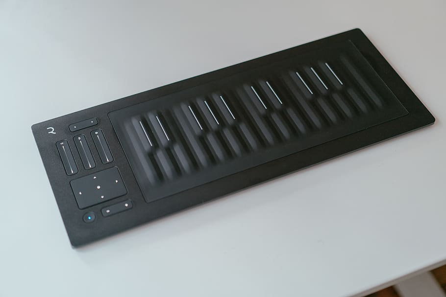

Actualidad
Esta epoca de la produccion musical esta marcada por los grandes y significantes avances en la
tecnologia y su impacto en la creacion y la distribucion de la musica.
Con la aparicion de computadoras poderosas, interfaces de audio de alta calidad, software sofisticado y
el uso del movimiento tactil del music, la produccion musical se ha vuelto mas accesible y versatil que
antes.

Futuro
La era moderna continua evolucionando con las tecnoligias y modas emergentes que se presentan en la industria de la musica. Algunos de esos avances notables incluyen:
- Aplicaciones de Inteligencia Artificial y Machine Learning para la automatizacion de la composicion musical y procesamiento de audio inteligente.
- Realidad virtual empleada para ofrecer una experiencia mas inmersiva al momento de producir y distribuir la musica.
- La integracion de DAWs a dispositivo moviles y la creacion de interfaces tactiles para la habilitacion de una produccion musical remota o movil.